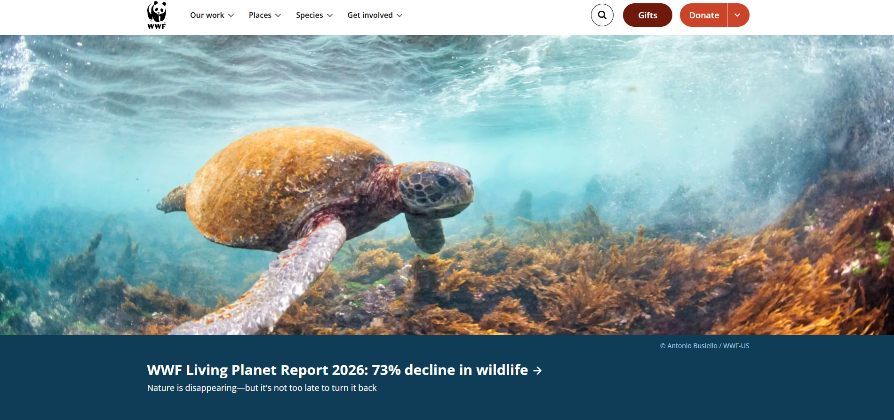

The website I chose was World Wildlife, which can be found at https://www.worldwildlife.org It is a nonprofit organization committed to protecting nature and its resources.
I believe the site's target audience would be people who care about and want to get involved in protecting and preserving nature and wildlife.
I believe the site is organized in a web or random organization style. The CRAP design principle the site seems to use is either contrast or repetition.
I don't know what the audit score for the site would be because the accessibility checker has a daily limit that I exceeded. I think the site seems effective in its purpose from what I can tell.
The site also seems to be loaded with plenty of useful information for anyone visiting the site. One recommendation I would make is that the photos could be updated because the resolution of some of them seem lower quality than intended.